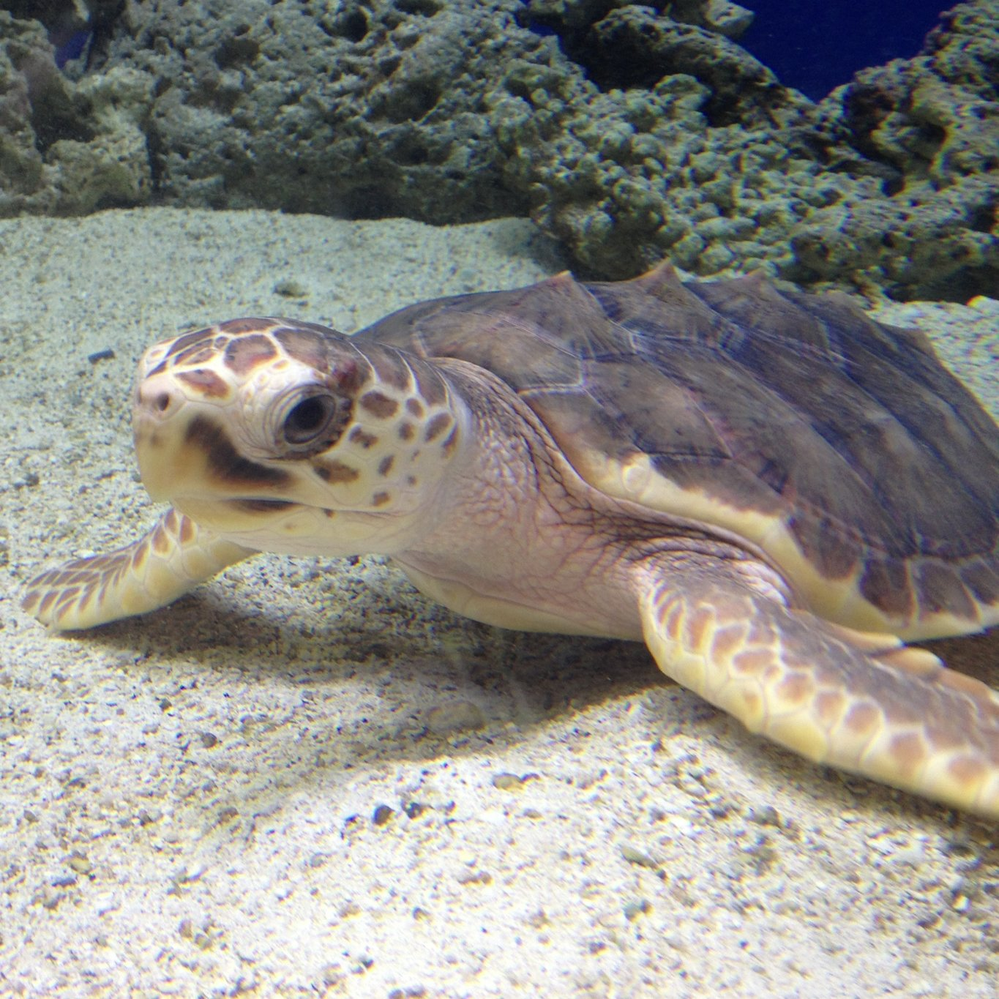

Chodíte rádi do fast foodů, aby jste si udělali radost? Kupujete si ke svému menu pití v kelímcích?
Příště zvažte, co si kupujete. Jednorázové plasty zahlcují náš svět takovým způsobem, že se tvoří plastové ostrovy.
Přírodě trvá velmi dlouho, než plast rozloží.

Stejně jako my si zvířata denně hledají potravu. V oceánu plave spousta kořisti. Ale zvíře nerozpozná rozdíl mezi plastem a jídlem. Vše pro ně vypadá stejně.
Buďto se do toho zamotá, někde se mu to zabodne, nebo mu to zahltí žaludek a následně umírají.
Je možnost, že za několik let další generace ani nepoznají, co želva je. Bude to
pouze vzpomínka v historii.